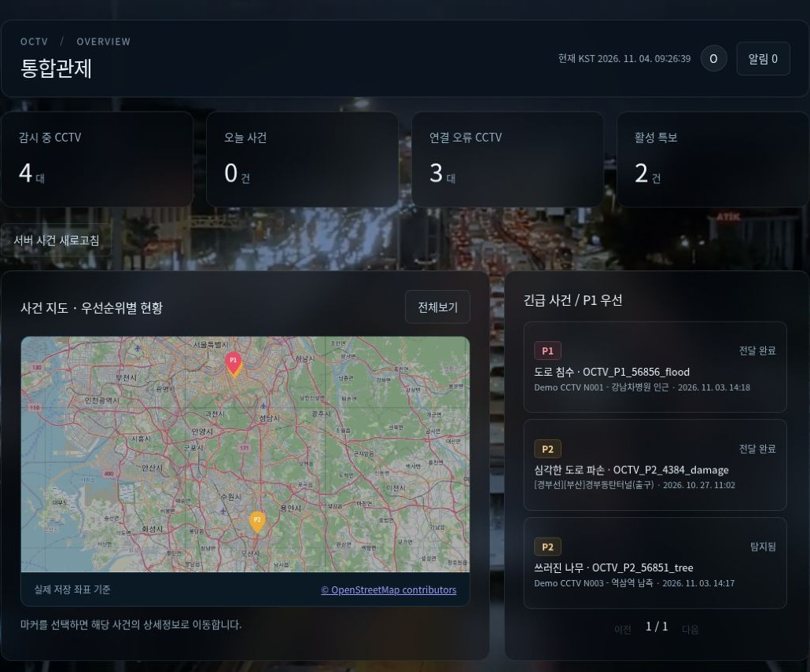
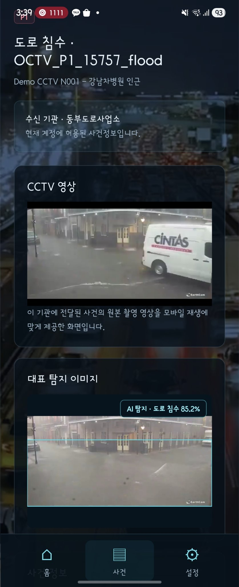

01 / FINAL PROJECT · 2인 팀
OCTV
탐지된 재난을, 대응 가능한 정보로.
CCTV 재난 탐지 이후 외부 상황을 분석하고, 위험도·기관·경로를 추천하는 재난 대응 지원 서비스.
MY CONTRIBUTION판단·대응 Backend / 외부 데이터 / 알림 / 통합·배포 / CCTV 적응학습
기능 시연 · 구현 코드 ↗OCTVDISASTER RESPONSE


Python · FastAPI · LangGraph · Redis · Celery